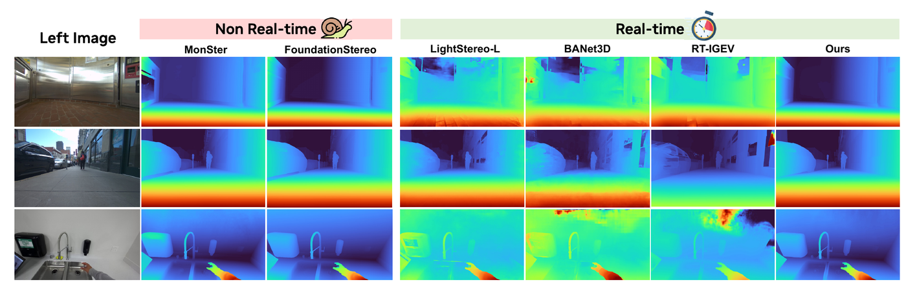
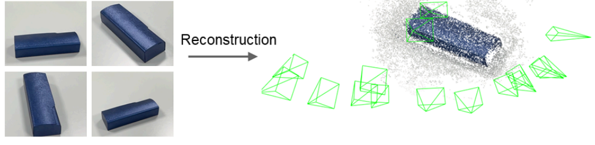
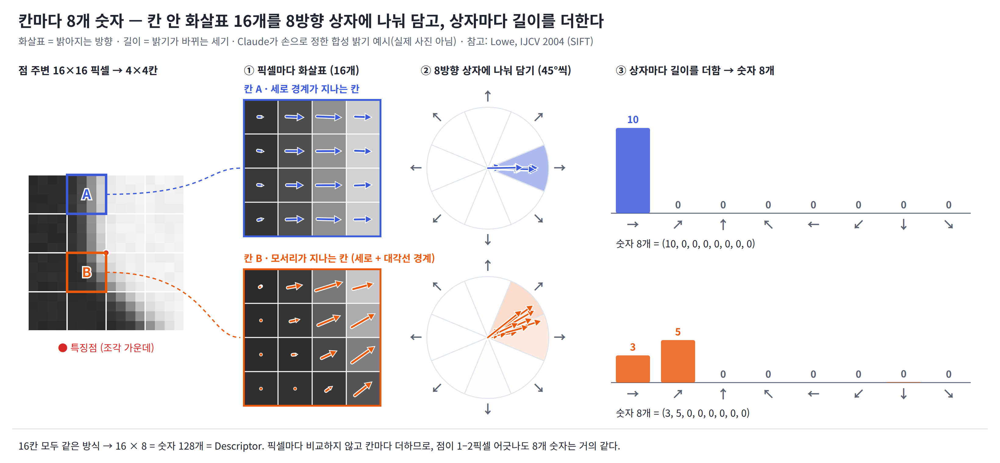
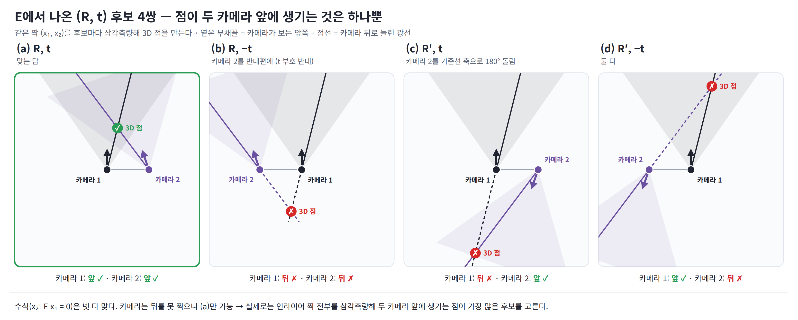
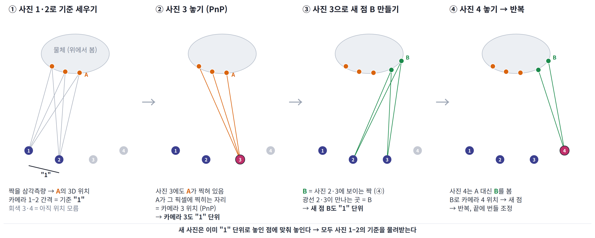
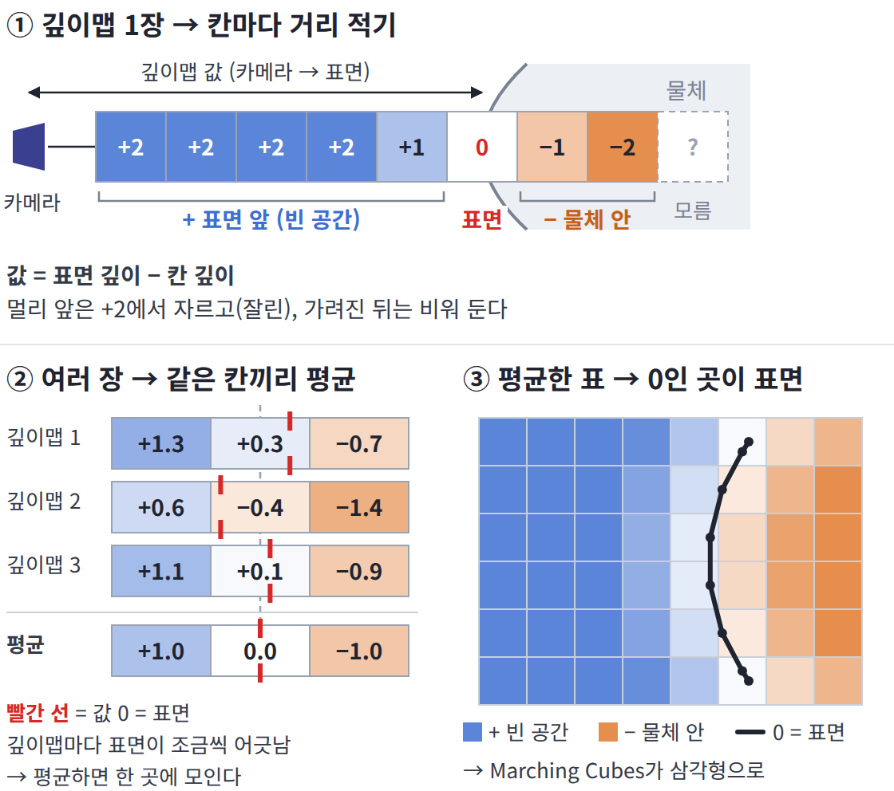
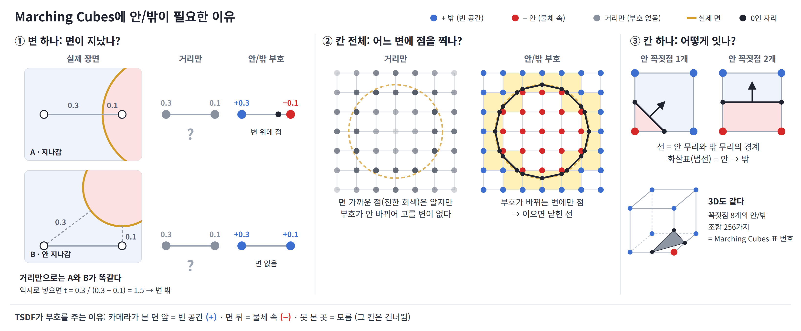
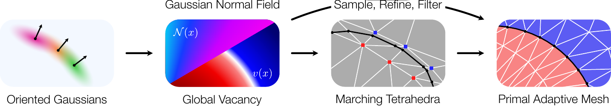
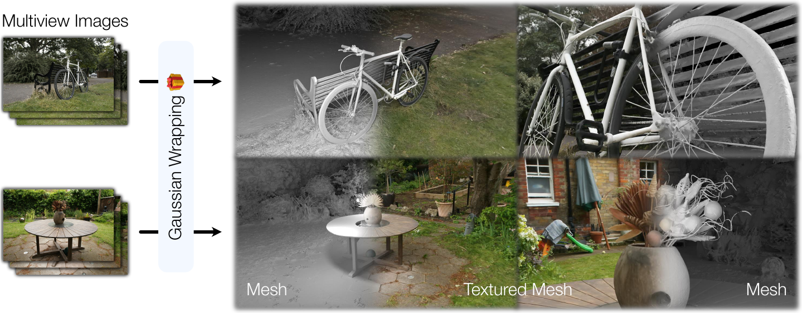
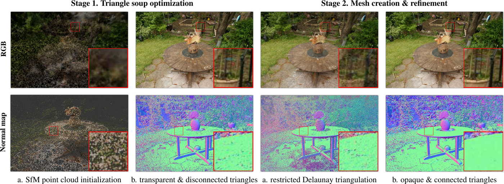

핀홀 카메라 모델
원근 투영 공식 (바닥 2D)
카메라 중심 \(C=-R^{\top}t\)
d: 시차 · b: 기준선 · 평행 스테레오
R, t: 카메라 1 → 2 · \([t]_{\times}\): t의 외적 행렬
⓪로드맵 — 사진에서 면(mesh)까지, 두 갈래
갈래 1 · 재료 얻기 사진 → 카메라 (K, R, t) · 깊이
Fast-FoundationStereoWen 외, CVPR 2026
스테레오 사진 2장 → 시차 → 깊이 (③ 자리), 실시간
갈래 2 · Mesh 만들기 카메라 + 사진 (+ 깊이) → 면(mesh)
GGGSZhang 외, arXiv 2026
타원체로 깊이를 더 정확히 그려 → ⑦ TSDF · Marching Cubes (부록 B에서 자세히)
Fast-FoundationStereo

GGGS
실험 ① 3DGS vs GGGS · 왼쪽 3DGS · 오른쪽 GGGS / 위 색 · 아래 렌더 깊이로 만든 형상
실험 ② GGGS + 깊이 손실 · 왼쪽 GGGS · 오른쪽 GGGS + 측정 깊이 손실
실험·영상: 심영찬 (연구실 그룹 미팅 자료)
최신 연구는 문제를 새로 푸는 것이 아니라, 이 길의 한 칸을 더 잘 채운다. 학습 모델의 정답도 상당수가 COLMAP의 SfM·MVS(⑥) 결과나 합성 렌더링에서 나온다 → 기초가 그대로 쓰인다.
①외부 파라미터 \([R\mid t]\) — 월드 좌표계 → 카메라 좌표계 변환
사진 여러 장 → 복원 · 초록 사각뿔 하나 = 사진 한 장을 찍은 카메라

그림: Lee & Yoo, Dense-SfM (CVPR 2025)
월드 좌표계 · 평면도 · 격자 1칸 = 1 m
카메라 좌표계 · \(x_c\) 오른쪽, \(z_c\) 광축 (앞)
파라미터
②내부 파라미터 K — 카메라 좌표계 → 이미지 좌표 (원근 투영)
평면도
이미지 · 1행, 0–640 픽셀
파라미터
③삼각측량 · 스테레오 — 두 광선의 교점으로 깊이 결정
평면도 · 카메라 1 · 카메라 2
카메라 1 이미지 · 광선 위 깊이 가설이 모두 같은 픽셀
카메라 2 이미지 · 가설이 한 줄로 늘어섬 (2D 이미지에서는 에피폴라 선)
파라미터
④특징점 검출 · 매칭 — 다시 찾기 쉬운 점을 고르고, 가장 닮은 점과 짝짓는다
1. 검출: 창을 어느 방향으로 밀어도 모습이 달라지는 점 = 코너 (SIFT - DoG 사용)
SIFT: Scale-Invariant Feature Transform (Lowe, IJCV 2004) · DoG: Difference of Gaussians
- ①후보 찾기 (DoG): 흐림 정도가 다른 두 이미지를 빼서, 특정 크기의 무늬가 도드라진 점을 고른다
- ②엣지 버리기 (\(\lambda\)): 작은 창을 여러 방향으로 밀어, 창 안 흑백 밝기가 얼마나 바뀌는지 본다\(\lambda_1\): 가장 크게 바뀌는 방향의 변화량 · \(\lambda_2\): 가장 작게 바뀌는 방향의 변화량(\(\lambda_1\) 방향과 90°)
→ 아래 세 칸처럼 \(\lambda_1, \lambda_2\) 둘 다 큰 점(코너)만 남긴다 - ③Descriptor 만들기: 남은 점마다 주변 모양을 숫자로 적는다 → 2. 매칭
이미지 1 · 세 점에 창(30×30 픽셀)을 놓음
평면 ✗ 위치를 못 정함
어느 방향으로 밀어도 밝기 그대로
엣지 △ 경계를 따라 미끄러짐
경계를 따라 밀면 그대로, 가로지르면 바뀜
코너 ✓ 한 점으로 정해짐
어느 방향으로 밀어도 바뀜
사진: DTU MVS 데이터셋 scan 114 — Jensen et al., “Large Scale Multi-view Stereopsis Evaluation”, CVPR 2014 (데이터셋 페이지)
2. 매칭: 점마다 Descriptor를 만들고, 가장 닮은 점과 짝짓는다
Descriptor: 특징점 주변 모양을 숫자로 적은 것. 두 사진의 점끼리 이 숫자가 비슷하면 같은 점으로 본다.
- ①픽셀마다 화살표: 이웃과의 밝기 차(오른쪽 − 왼쪽, 아래 − 위)로, 밝기가 커지는 방향과 세기를 구한다
- ②칸마다 8개 숫자: 점 주변 16×16 픽셀을 4×4칸으로 나누고, 칸 안 화살표를 8방향(→ ↗ ↑ ↖ ← ↙ ↓ ↘)으로 나눠 세기를 더한다
- ③이어 붙이기: 16칸 × 8방향 = 숫자 128개 → 이것이 Descriptor
- ④짝짓기: 사진 2의 모든 점과 Descriptor 거리를 재서, 1등(\(d_1\))이 2등(\(d_2\))보다 확실히 가까울 때만 짝 (\(d_1 / d_2 \lt 0.75\)) → 아래 데모
이미지 1 → 이미지 2 · 1등 · 2등 후보

⑤8점 알고리즘 · RANSAC — 대응점으로 기본 행렬 F 추정, 틀린 짝은 투표로 거름
1. 에피폴라 선: 이미지 1의 점 하나 = 광선 하나 → 이미지 2에서는 선 하나
개념도

F가 하는 일 · 이미지 1의 점 → 이미지 2의 선
2. 실제 사진: \([R\mid t]\)를 모르므로 대응점 8쌍으로 F를 구하고, F로 에피폴라 선을 그린다 (\(F\,x_1\) = 이미지 2의 선)
이미지 1 · 이미지 2 · 초록 선 = F 계산에 쓴 짝 · 보라 = 선택한 점의 에피폴라 선 (추정 F) · 흰 점선 = 기준 F
3. RANSAC: 무작위 8쌍으로 F → 624쌍이 투표 → 여러 번 반복해 찬성이 가장 많은 F를 고른다
RANSAC: RANdom SAmple Consensus (Fischler & Bolles, Communications of the ACM 1981)
찬성 · 반대 · 초록 점 = 찬성 (그 F의 에피폴라 선에서 2 픽셀 안), 회색 점 = 반대 · 고리 = 뽑은 8쌍 (흰색 정상, 빨강 틀린 짝)
찬성 수
F에서 \(R,\ t\) 꺼내기
- ①F 안에는 카메라 관계(R, t)와 렌즈(K)가 섞여 있다:\[F = \underbrace{K_2^{-\top}}_{\text{픽셀→광선 (카메라 2)}}\ \underbrace{[t]_{\times} R}_{E}\ \underbrace{K_1^{-1}}_{\text{픽셀→광선 (카메라 1)}}\]
- ②K는 미리 안다 → 벗기기:\[E = \underbrace{K_2^{\top} F K_1}_{\text{K 벗기기}} = \underbrace{[t]_{\times} R}_{\text{곱해진 3×3 표 하나}}\]
- ③E 쪼개기:\[E \;\xrightarrow{\ \text{SVD}\ }\; \underbrace{R,\ t}_{\text{후보 4쌍 → 점이 두 카메라 앞인 1쌍}} \quad (t\text{는 방향만})\]
\(F\): 기본 행렬 (이미지 1의 점 → 이미지 2의 선, 위에서 8점으로 구함)
\(K_1, K_2\): 카메라 1, 2의 내부 파라미터 (초점거리 \(f\), 주점 \(c_x, c_y\) · ② 쪽)
\(R\): 카메라 1 → 2 회전 · \(t\): 카메라 1 → 2 이동 · \([t]_{\times}\): \(t\)와의 외적을 행렬로 쓴 것
\(E\): 본질 행렬 (Essential matrix, F에서 K를 벗겨 R, t만 남은 것)
SVD: Singular Value Decomposition (특이값 분해, 행렬을 곱하기 전 조각으로 쪼개는 방법)
\(K^{-1}\): 픽셀 → 광선 방향 (② 거꾸로) · \(K_2\)에 \(^{\top}\)가 붙는 이유: \(x_2^{\top} F x_1 = (K_2^{-1}x_2)^{\top}\, E\,(K_1^{-1}x_1)\), 곧 \(x_2\)가 왼쪽에 눕혀 곱해져서

4. 정리: 사진 두 장 → 카메라 자세 · 깊이
⑥SfM · MVS — 카메라 위치를 모두 구하고, 모든 픽셀의 깊이를 구한다
SfM: Structure from Motion · PnP: Perspective-n-Point
1. SfM: 모든 카메라를 같은 자(단위)로 놓는다
- ⓪준비: 모든 사진에서 특징점을 찾고, 모든 사진 쌍의 짝을 먼저 찾아 둔다 (④)
- ①두 장으로 시작: ⑤ 방법으로 카메라 2대와 첫 3D 점을 구한다 → 두 카메라 간격을 "1"로 정하고, 이 자를 끝까지 쓴다
- ②새 사진 붙이기 (PnP): 새 사진에 보이는, 이미 3D 위치를 아는 점(주황)에 맞춰 새 카메라 위치를 구한다 → 같은 자 "1"이 이어진다. 그다음 삼각측량으로 새 점(초록)을 더하고 반복 \(X \leftrightarrow x \;\Rightarrow\; R,\ t\)
- ③번들 조정: 한 장씩 붙일수록 작은 오차가 쌓인다 → 그래서 모든 카메라·점을 함께 움직여, 3D 점을 사진에 다시 찍은 자리와 실제 찍힌 자리의 차이(재투영 오차)를 줄인다\[\min_{R,\,t,\,X}\ \sum \big\| x - \text{투영}(R,t,X) \big\|^2\]
모든 사진에서, 찍힌 픽셀 x와 3D 점 X를 다시 투영한 자리의 차이(재투영 오차) 합을 줄인다

2. MVS: 픽셀마다 에피폴라 선 위를 따라가며 패치를 비교한다 → 가장 닮은 곳이 깊이
MVS: Multi-View Stereo · NCC: Normalized Cross-Correlation
이미지 1 · 이미지 2 · 초록 고리 = 깊이 가설의 위치, 보라 = \(x_1\)의 에피폴라 선 (깊이 480–800 mm)
모든 픽셀에 반복 = 깊이 지도 · 시점 13 기준, 옆 사진 4장과 비교 · 회색 = 정하지 못함 (민무늬, 가려짐)
3. 정리: 사진 N장 → 카메라 전부 · 픽셀마다 깊이
⑦TSDF · Marching Cubes — 깊이 지도 여러 장을 칸에 합치고, 표면을 뽑아 면(mesh)으로 만든다
TSDF: Truncated Signed Distance Function (Curless & Levoy, SIGGRAPH 1996) · Marching Cubes: Lorensen & Cline, SIGGRAPH 1987
1. TSDF: 칸마다 표면까지 거리를 적고, 여러 장을 평균한다
- ①공간을 작은 칸(복셀)으로 나눈다.
- ②깊이 지도마다, 칸이 표면 앞이면 +, 뒤면 −로 거리를 적는다(최대 \(\tau\)에서 자름).
- ③여러 장의 값을 평균한다 → 한 장의 잡음·구멍이 다른 장으로 메워진다.\[D(v)=\dfrac{\sum_i w_i\, d_i(v)}{\sum_i w_i}\]
\(d_i\): 깊이 지도 \(i\)로 잰 칸 \(v\)의 표면까지 거리(±τ에서 자름) · \(w_i\): 가중치 · 면 = \(D=0\)인 곳
위에서 본 단면 · 파랑 + / 빨강 − / 흰색 0 / 회색 관측 없음 · 검정 점 = 정답 윤곽
바깥 화살표 = 더한 사진의 카메라 방향 · 분홍 = 새로 더한 사진

2. Marching Cubes: 부호가 바뀌는 칸 변에 점을 찍어 잇는다
- ①칸 꼭짓점의 부호(+/−)를 본다.
- ②부호가 바뀌는 변 위, 값에 비례한 자리에 점을 찍는다: \(t = \dfrac{v_0}{v_0 - v_1}\) (예: \(+0.3\)과 \(-0.1\)이면 \(t = 0.75\), 3/4 지점).
- ③칸 안의 점을 잇는다 → 2D는 선, 3D는 삼각형. 3D는 꼭짓점 8개의 부호 조합 \(2^8 = 256\)가지(대칭으로 묶으면 15가지)마다 그을 삼각형이 표로 정해져 있다.
겹침·틈이 없는 이유: 변 위의 점은 그 변 양 끝 값으로만 정해진다 → 변을 공유하는 이웃 칸이 같은 점을 쓴다 → 면이 이어지고, 각 칸의 삼각형은 자기 칸 안에만 있어 겹치지 않는다.

칸 하나 · 꼭짓점을 눌러 + / − 바꾸기 · 끌어서 돌리기 · 휠로 확대
노란 면 = 잇는 방법이 두 가지인 면. 이웃 칸과 다르게 고르면 틈이 생긴다 (해결: Asymptotic Decider, 1991).
칸 27개 · 끌어서 돌리기 · 휠로 확대
3. 한 번에 보기: 깊이 지도 → TSDF → Marching Cubes
3D · 끌어서 돌리기 · 휠로 확대
부록 A렌더링으로 풀기 — 사진을 다시 그려 보고, 실제 사진과 같아지게 3D를 고친다
NeRF: Neural Radiance Fields (Mildenhall 외, ECCV 2020) · Gaussian Splatting: 3D Gaussian Splatting (Kerbl 외, SIGGRAPH 2023) · NeuS: Wang 외, NeurIPS 2021
1. 공통: 그려 보고 고친다
깊이 지도를 따로 만들지 않고, 모든 사진의 픽셀 색을 한꺼번에 맞춘다.
2. 픽셀 하나 = 광선 위의 것들을 앞에서부터 쌓은 색
α = 그 자리의 불투명도 · T = 앞에서 아직 안 가려진 정도 · c = 색
광선 하나 · 앞에서부터 쌓기
3. 두 방법
NeRF · 공간 = 신경망 하나
- ①신경망에 점 (x, y, z)와 보는 방향을 넣으면 색과 밀도가 나온다.
- ②픽셀마다 광선 위 점 수백 개를 신경망에 물어 쌓는다 → 느리다.
- ③밀도는 경계가 흐려 면을 뽑으면 지저분하다 → NeuS: 밀도 대신 부호 거리(⑦ TSDF와 같은 뜻)를 배워, 0인 곳을 Marching Cubes로 꺼낸다.
Gaussian Splatting · 공간 = 반투명 타원체 수백만 개
- ①⑥ SfM의 점마다 타원체 하나: 위치 · 크기와 방향 · 불투명도 · 색.
- ②화면에 타원으로 찍고 깊이 순으로 쌓는다 → 신경망에 묻지 않아 실시간으로 그린다.
- ③학습하며 모자란 곳은 쪼개거나 복제하고, 투명해진 것은 지운다.
- ④한계: 면이 없다(타원체 구름) → 면을 따로 꺼내야 한다.
4. 최근 연구 (2026): 타원체에서 면 꺼내기
GGGS · Gaussian Wrapping · MeshSplatting → 부록 B에서 직접 움직여 본다.
5. 정리
▲ 여기만 바뀐다 (NeRF · Gaussian Splatting)
부록 B최근 연구 (2026) — 타원체에서 면을 얻는 세 가지 방법
GGGS: Geometry-Grounded Gaussian Splatting (Zhang 외, arXiv 2601.17835 · 학회 미확인) · Gaussian Wrapping: From Blobs to Spokes (Gomez 외, ECCV 2026) · MeshSplatting: Held 외, CVPR 2026 · Objects as Volumes: Bailey Miller, Hanyu Chen, Alice Lai, Ioannis Gkioulekas, CVPR 2024
GGGS와 Gaussian Wrapping의 바탕: 물체를 “확률적 고체”로 보면 빈 정도 \(v\)에서 감쇠 \(\sigma=|\omega\cdot\nabla\log v|\)가 나온다 (Objects as Volumes) → 그림 그리기와 면(\(v=0.5\))이 같은 식에서 나온다.
1. GGGS — 타원체를 확률적 고체로 보고, 깊이를 매끈하게
저자: Baowen Zhang, Chenxing Jiang, Heng Li, Shaojie Shen, Ping Tan · arXiv 2601.17835 (공개 2026-01-25, 수정 2026-01-27) · 학회: 미확인
- ①타원체 하나 = 속이 흐릿하게 찬 고체: 빈 정도 \(v=\sqrt{1-G}\). 이렇게 두면 기존 Gaussian Splatting과 같은 그림이 나온다.
- ②광선 위 투과율 T가 타원체 안에서도 연속으로 줄어든다 → T = 0.5인 자리(중간값 깊이)를 이분 탐색으로 찾는다.
- ③이 깊이 지도 여러 장 → ⑦ TSDF + Marching Cubes로 면.
깊이 비교 · 옆에서 본 장면, 광선마다 깊이
평균 깊이 ━ · 기존 중간값 깊이 ┄ · GGGS 깊이 ━
기존 투과율 ┄ · GGGS 투과율 ━ · 옅은 점선 = 중간선
볼 것: 허공의 타원체를 켜면 평균 깊이는 그쪽으로 끌리고, 기존 중간값은 계단이 지고, GGGS는 매끈하다.
2. Gaussian Wrapping — 방향 붙은 타원체로 감싸, 닫힌 면
저자: Diego Gomez*, Antoine Guédon*, Nissim Maruani, Bingchen Gong, Maks Ovsjanikov (*공동 1저자) · arXiv 2604.07337 (공개 2026-04-08) · 학회: ECCV 2026
- ①타원체마다 바깥을 가리키는 법선을 하나 더 배운다 → 물체를 껍데기처럼 감싼다(얇은 살도 앞뒤로).
- ②빈 정도 v(x) = x에 닿는 학습 카메라 광선 중 가장 덜 가려진 것의 투과율(타원체마다 최대점을 지나면 더 줄지 않음).
- ③타원체마다 점 2개(중심 = 안, 중심 + 3s·법선 = 밖) → Delaunay 사면체 → 변 위 v = 0.5 자리를 이분 탐색 → 닫힌 면(Marching Tetrahedra).
논문 그림 · 그림 3 방법 흐름 · 그림 1 결과 (자전거 살까지 닫힌 면)

방향 붙은 타원체 → 법선장·빈 정도 v → Marching Tetrahedra → (선택) 적응형 면

여러 시점 사진 → 닫힌 mesh (왼쪽 회색 = 면, 가운데 = 색 입힌 면)
그림: Gomez 외, From Blobs to Spokes (ECCV 2026) 그림 1·3 · arXiv 2604.07337
감싸서 닫기 · 2D로 줄인 그림 (사면체 → 삼각형)
3. MeshSplatting — 처음부터 삼각형으로, 끝에는 불투명한 mesh
저자: Jan Held, Sanghyun Son, Renaud Vandeghen, Daniel Rebain, Matheus Gadelha, Yi Zhou, Anthony Cioppa, Ming C. Lin, Marc Van Droogenbroeck, Andrea Tagliasacchi · arXiv 2512.06818 (공개 2025-12-07) · 학회: CVPR 2026
- ①SfM 점마다 반투명 삼각형으로 시작한다(서로 안 붙은 “삼각형 수프”) → 렌더링하며 학습.
- ②제한 Delaunay로 꼭짓점을 이어 붙인다(새 점을 만들지 않음) → 이웃 삼각형이 꼭짓점을 공유.
- ③학습하며 불투명도 하한 \(O_t\)를 0 → 1, 경계 부드러움 σ를 1 → 0으로 → 끝에는 꽉 찬 불투명 삼각형 = 게임 엔진에 바로 넣는 mesh.
논문 그림 · 1단계 수프 → 2단계 연결·불투명 (위 색, 아래 법선 지도)

그림: Held 외, MeshSplatting (CVPR 2026) 그림 3 · arXiv 2512.06818 · CC BY 4.0
삼각형 하나 · 화면에 찍힌 모양
수프 → 연결 · 2D 단면 (삼각형 → 선분)
4. 정리
GGGS
면 = 깊이 지도 → ⑦ TSDF
강점: 깊이가 매끈하고 시점끼리 맞는다
Gaussian Wrapping
면 = v = 0.5를 Marching Tetrahedra로
강점: 닫힌 면, 얇은 구조, 가벼운 mesh
MeshSplatting
면 = 학습한 삼각형 그대로
강점: 불투명 mesh, 게임 엔진에 바로